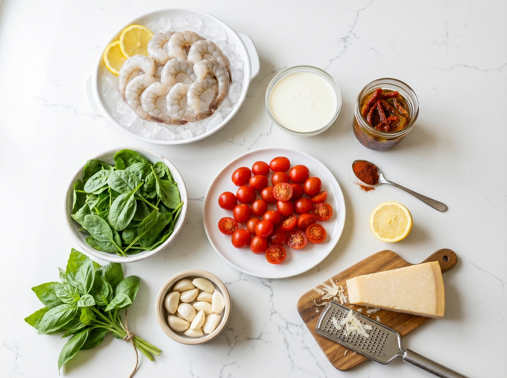
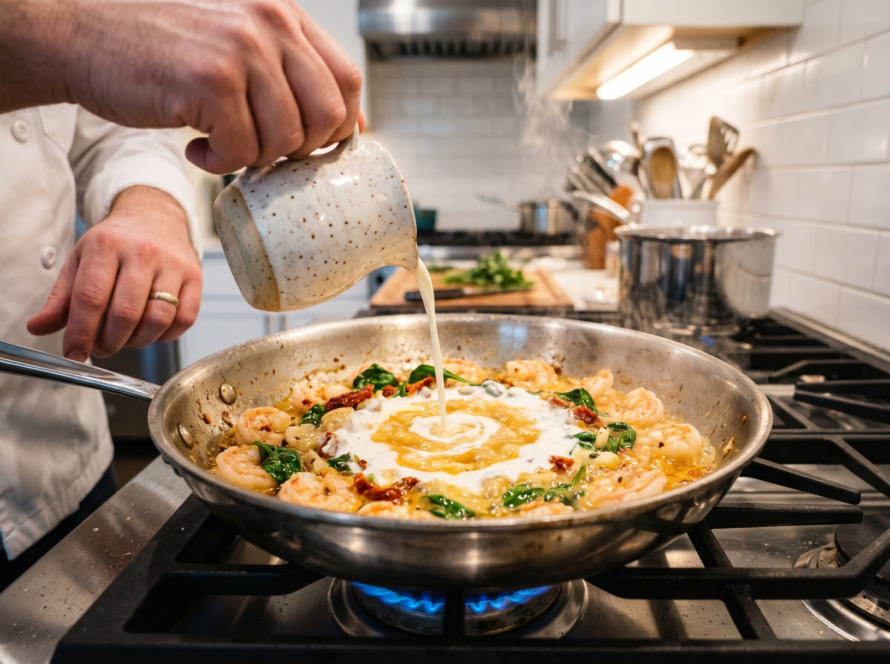
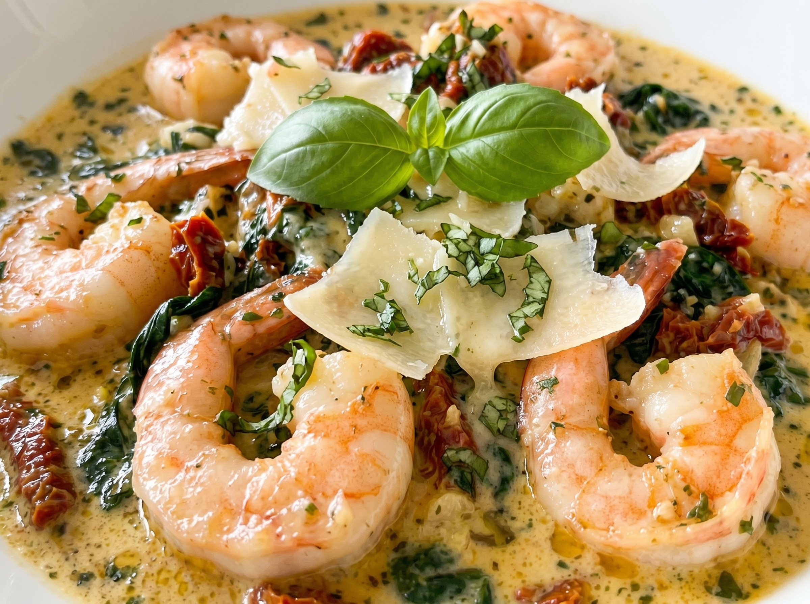

This creamy Tuscan shrimp is the most impressive 20-minute dinner you'll ever make. Plump, perfectly seared shrimp swimming in a rich, velvety sauce of sun-dried tomatoes, garlic, Parmesan, and fresh spinach — it looks like it took an hour and tastes like it cost $40 at a restaurant.
Tuscan-inspired dishes have taken over American home kitchens in the last few years, and for good reason — the flavor combination of sun-dried tomatoes, cream, garlic, and Parmesan is absolutely addictive. The sun-dried tomatoes add an intense sweetness and depth that makes the sauce taste complex without any real effort. I've made this for dinner parties where guests couldn't believe it took less than 20 minutes.
Why You'll Love This Recipe
- 20 minutes start to finish — impressive speed for such a sophisticated dish
- Restaurant quality at home — the sun-dried tomato cream sauce is genuinely spectacular
- One pan — easy cleanup for such an elegant meal
- Versatile — serve over pasta, rice, or with crusty bread
- High protein, naturally low-carb — as written, under 10g carbs per serving
Finding Your Ingredients
Shrimp: Look for "large" or "jumbo" shrimp, already peeled and deveined to save time. Frozen shrimp works perfectly — thaw overnight in the fridge or under cold running water for 10 minutes. Available at every US grocery store. Trader Joe's and Costco both have excellent frozen shrimp at great prices.
Sun-dried tomatoes: Buy sun-dried tomatoes packed in oil (not the dry-packed kind). They're softer, more flavorful, and ready to use. Available in the Italian foods or condiment aisle at Whole Foods, Kroger, and most major grocery stores. The oil they're packed in is also great for cooking — don't waste it.
Heavy cream: Same as heavy whipping cream at any US store. This is what makes the sauce velvety rather than watery.
Kitchen Tools
- Large skillet (12-inch) — stainless steel or cast iron
- Tongs for the shrimp
- Wooden spoon for the sauce
Creamy Tuscan Shrimp
Perfectly seared shrimp in a rich sun-dried tomato, Parmesan, and spinach cream sauce. One pan, 20 minutes.
Ingredients

Instructions
- 1
Season and sear the shrimp. Pat shrimp completely dry. Season with salt, pepper, and Italian seasoning. Heat olive oil in a large skillet over medium-high heat. Add shrimp in a single layer and cook 1–2 minutes per side until pink, opaque, and curled into a C-shape (not an O-shape, which means overcooked). Transfer to a plate immediately.
- 2
Build the sauce base. Reduce heat to medium. Add garlic and chopped sun-dried tomatoes to the pan. Cook, stirring, for 60 seconds until the garlic is golden and fragrant. Pour in the chicken broth and scrape up any browned bits from the pan bottom.
- 3
Create the cream sauce. Pour in the heavy cream and stir to combine with the broth. Bring to a gentle simmer. Add the Parmesan cheese and red pepper flakes if using. Stir until the Parmesan is fully melted and the sauce is smooth.
- 4
Wilt the spinach. Add the baby spinach in handfuls and stir until just wilted — this takes about 1–2 minutes. Don't overcook; it should be bright green and just collapsed.
- 5
Finish and serve. Return the shrimp to the pan along with any juices on the plate. Toss gently in the sauce and heat for just 30 seconds — shrimp overcook very quickly. Taste and adjust salt. Garnish with fresh basil and serve immediately over pasta, rice, or with bread.

Pro Tips for Perfect Tuscan Shrimp
- Don't overcook the shrimp. Shrimp go from perfect to rubbery in 30 seconds. The moment they're pink and curled (a C-shape), they're done. Take them out immediately.
- Dry the shrimp. Moisture on shrimp surfaces creates steam instead of a sear. Pat with paper towels before cooking.
- Use freshly grated Parmesan. Pre-shredded Parmesan from a bag contains cellulose that prevents it from melting smoothly. Buy a block and grate it yourself — it makes a silkier sauce.
- Save the sun-dried tomato oil. The oil the tomatoes are packed in is incredibly flavorful. Use it instead of plain olive oil to cook the garlic for even more Tuscan depth.
Variations
- Tuscan chicken: Replace shrimp with thinly sliced chicken breast — pound to even thickness, sear 4–5 minutes per side, then make the same sauce.
- Dairy-free: Use full-fat coconut cream instead of heavy cream and nutritional yeast instead of Parmesan for a dairy-free version.
- Add artichokes: Quarter-cup of marinated artichoke hearts added with the sun-dried tomatoes is a classic Tuscan addition.
- Mushroom version: Add 8 oz (225g) sliced cremini mushrooms after the garlic, cook 3 minutes, then proceed with the sauce.
Serving Suggestions

- Fettuccine or linguine — toss the pasta directly in the sauce for a full Tuscan pasta dish
- Over white rice or cauliflower rice
- With crusty sourdough or a French baguette for sauce scooping
- Over polenta for a Southern Italian feel
- With a simple arugula salad dressed in lemon and olive oil
Storage & Reheating
Refrigerator
Store up to 2 days. Shrimp texture degrades quickly.
Freezer
Not recommended — cream sauces and cooked shrimp don't freeze well.
Reheat
Warm gently in a skillet over low heat with a splash of cream. Shrimp overcook easily when reheated.
Frequently Asked Questions
Can I use frozen shrimp for this recipe?
Absolutely — frozen shrimp is what most home cooks use and it's perfectly fine. Thaw it overnight in the fridge, or place in a colander under cold running water for 5–10 minutes. The key is to pat it VERY dry after thawing before cooking. Frozen shrimp releases more water than fresh and needs to be well-dried for a good sear.
What does "peeled and deveined" mean?
The shell is removed (peeled) and the dark digestive tract running along the back of the shrimp is removed (deveined). Most shrimp sold in US grocery stores comes this way. Look for bags labeled "EZ peel," "peeled and deveined," or "P&D" at Whole Foods, Trader Joe's, or in the frozen seafood section of any major grocery store.
Can I substitute half-and-half for heavy cream?
You can, but the sauce will be thinner and less rich. Half-and-half is 12% fat vs 36% fat in heavy cream — the lower fat content means less body and a tendency for the sauce to separate if it gets too hot. If you use half-and-half, keep the heat at a very low simmer and don't let it boil.
Where can I find sun-dried tomatoes in US stores?
In the Italian foods or condiment aisle at any major grocery store. Most commonly stocked brands: Trader Joe's has their own excellent version, California Sun Dry is widely available at Whole Foods and Kroger, and Alessi and DeLallo are found at most supermarkets. Look for "sun-dried tomatoes in olive oil" — the oil-packed ones are much better than dry-packed for this recipe.
Nutrition Information
Per serving (without pasta or rice). Values are estimates.
| Nutrient | Amount |
|---|---|
| Calories | 420 kcal |
| Total Fat | 28g |
| Protein | 34g |
| Carbohydrates | 10g |
| Fiber | 1g |
| Sodium | 680mg |
You Might Also Love


Made This Dish?
This is one of our most-saved recipes on Pinterest — and for good reason. Save it now so you can find it again on your next "I want something impressive but easy" night.
📌 Save on Pinterest